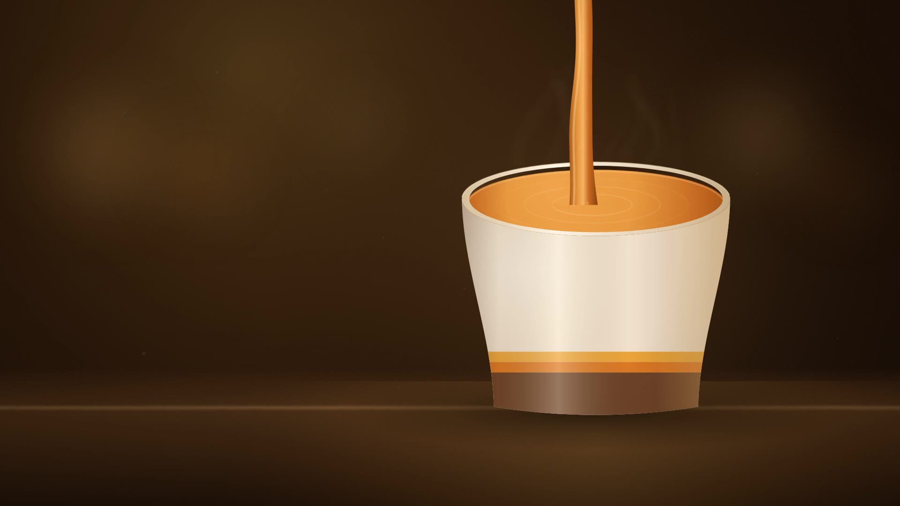

Hot soup, made fresh daily. Four soups cooked this morning, Monday to Friday, 11 to 3, takeaway only.
Weekdays, 11 to 3
Another cold sandwich.
Or something that was cooked this morning.
Hot soup, made fresh daily.
Weekdays, 11 to 3
Hot soup, made fresh daily.
Four soups, cooked this morning. Monday to Friday, 11 to 3. Takeaway only.
Find the shopToday
Made this morning.
Gone by three.
Four soups a day, cooked from scratch in our kitchen each morning, two classics and two that go a bit further. Ladled into a cup, lidded, and out the door.
The board
Four soups
on the board
Two classics and two gourmet, held hot until three. The board changes every weekday. When a soup runs out it is gone for the day.
View the menuHold to pour
- 01 Chicken & Vegetable
- 02 Pumpkin
- 03 Beef & Barley
- 04 Creamy Tomato & Basil

Take it home
Chilled 1L packs
Whatever is left in the pots at 3pm gets chilled down the same afternoon and sealed into one-litre packs. Same soup, same day it was cooked. Feeds two or three.
[$0.00] per 1L pack, from the fridge at the counter
Stock depends on what is left over, so packs sell out. Ring ahead if you want a particular soup put aside.
The shop
One kitchen,
one job
We are a small shop on a single site with a stove, four pots and a counter. There is no second kitchen, no central production and nothing arrives frozen in a bag.
Stock goes on before six. The four soups are decided by what came in from the market that week, which is why the board is different on Tuesday to what it was on Monday. We make what we think will sell that day and no more.
Before you walk down
The questions people actually ask
- Is soup actually enough for lunch?
- A cup with a roll gets most people through the afternoon. If you want more, ask for a bowl.
- Will it still be hot when I get back to my desk?
- It goes out lidded, straight off the heat. Five minutes' walk is fine. Much further and the 1L pack is the better buy.
- What if I get there and it is gone?
- It happens on cold days. Earlier is safer, and there is always something left on the board even late.
Find us
One shop, one address
When
| Monday | 11:00am – 3:00pm |
|---|---|
| Tuesday | 11:00am – 3:00pm |
| Wednesday | 11:00am – 3:00pm |
| Thursday | 11:00am – 3:00pm |
| Friday | 11:00am – 3:00pm |
| Saturday | Closed |
| Sunday | Closed |
Soups sell out before close on a cold day. Earlier is safer.